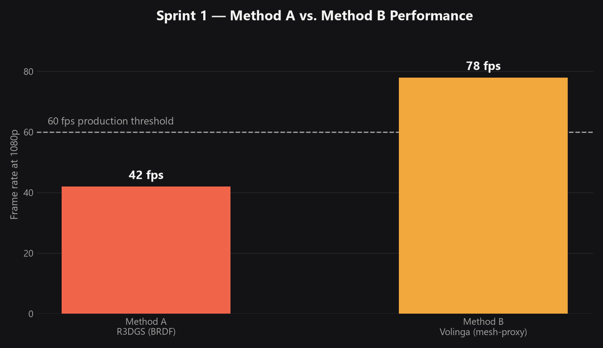
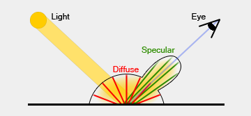

From Capture to Cut
A relightable 3D Gaussian Splatting pipeline for virtual production on LED volume stages. Standard 3DGS captures bake in the lighting at time of capture — a Director of Photography can't change the sun angle or drop in a practical without the whole environment looking wrong. This thesis builds and tests a pipeline that separates lighting from geometry, so a captured location stays relightable on stage.
The two methods, head to head
Both start from the same Canon R5 capture and COLMAP point cloud, trained through 3DGS, then split: Method A decomposes each Gaussian into albedo, roughness, and normals for physically accurate relighting — including a novel zero-shadow normalization pass, the thesis's original contribution. Method B is the commercial baseline, Volinga's faster mesh-proxy approach. Both were benchmarked on the same Poetter Hall interior capture.

The pipeline
Eight stages from camera to LED volume. The zero-shadow pass (step 6) is the novel piece — it strips residual baked shadows out of the albedo channel before Unreal's Lumen ever sees the asset, which neither Gao et al.'s published method nor Volinga's commercial pipeline currently does.

Why relighting needs physics, not just geometry
The technical premise: a captured scene has to be decomposed into real material properties — not just approximated with shadow-casting geometry — before it can be relit with physical accuracy. That decomposition is the Cook–Torrance microfacet BRDF, splitting reflectance into diffuse and specular components.

The expert interview
One structured interview so far — a Production Designer with commercial LED volume credits (anonymous, IRB consent, ~20 min, audio recorded). Six themes came out of it; these three quotes directly shaped the evaluation rubric.
"Looking at a photo, even printed, is nowhere near the size of what it is in reality."
"Until we finish our job, it's hard for everyone else on the crew to get to theirs."
"We thought it was going to be a sunny day, but now it's raining. How can I still make the director's vision come to life?"
The interview also surfaced shadow direction as the single highest-priority signal of environmental consistency — it's now the highest-weighted criterion in the five-point practitioner rubric.
Where it stands
Sprint 1 proves the pipeline runs end-to-end on a real SCAD location and confirms the research gap: nobody publishing on 3DGS relighting — academic or commercial — strips baked directional lighting before mesh extraction. Thesis 2 adds a second capture location (the Bull Street exterior, with its glass shopfront problem), performance optimization to get Method A over the 60fps line, and a full 3–5 practitioner evaluation round on SCAD's actual LED volume stage.